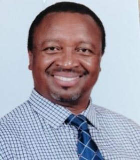

|
IEEE EMC2 2023 Technical Program
Conference will be held Algeria Standard Time (UTC+8 hours)
Time Converter
The workshop will open with short remarks from the two Chairs; this will be followed by the presentation of a summary of the white paper from the previous edition.
Each thematic half-day will consist of the following segments – a main keynote (45 – 55 minutes) to provide the main trends and challenges in each theme; three small keynotes of 15 minutes each, to present good practices and relevant experiences; panel discussion (75 minutes); conclusions (15 minutes). All participants will attend all the thematic sessions.
The workshop will end with a 60-minute concluding session, in which a synthesis of each session will be presented, and the audience will discuss the next steps.
Each half-day will be organised by a ‘champion’ –
- Food security: Victor Grimblatt, R&D Group Director, Synopsys Chile Innovation Center, Chile;
- Health: Balwant Godara, Political advisor – country engagement, Sanitation and Water for All international partnership;
- Migration: Olivier Feneyrol, Head of Migration programme, Terre des hommes, Switzerland;
- Poverty: Fidel Makatia, Developer Advocate, Autodesk, Nairobi, Kenya.
The champions have expertise and experience in their respective themes; together, they represent a range of stakeholder groups (corporate, international development organisation and non-governmental organisation) and geographical zones (Africa, Europe, Latin America).
The champion’s main tasks are:
- Define the scope of the half-day
- Identify and reach out to potential keynote speakers
- Manage the organisation of the session
- Panel – ask guiding questions and moderate discussion between audience and panelists
- Deliver a mini-keynote, if relevant
- Deliver the closing remarks for the session
- Support the participant(s) in preparing and delivering a synthesis of their session during the closing of the workshop
- Produce a summary report of the session
- Help draft the final report of the workshop.
As in the previous edition, the deliberations and conclusions of the workshop will be published in the form of a white paper. It is hoped that in the future, the workshop will evolve into a full-fledged conference, with published papers in Open Access Journal.
Program
The Food Security theme
The purpose of this track is to analyze the impact of climate change on food security and on agribusiness. The population is growing and according to FAO from United Nations the productivity of the agribusiness sector needs to increase by 70% for 2050 to be able to feed the earth population. The increase of the productivity has to be sustainable as the impact of agriculture on climate change is important providing more than 25% of GHG emissions.
The track considers one keynote, 3 mini-keynotes and a panel.
Keynote Speaker: Victor Grimblatt, Synopsys
Title: Food Security, Climate Change, and Electronics
Abstract:
Current climate change is negatively affecting agricultural production, primarily putting food security at risk in the future and causing substantial economic losses to the agri-food chain. On the other hand, agriculture is impacting the climate change being the responsible of at least one third of the Greenhouse Gases (GHG) emissions and without an important change on the way we produce food this number will continue to increase. Electronics and technology in general can play an important role on the change food production is requesting. The talk will present first the impact of climate change in agriculture, then the impact of agriculture on climate change, and then how technology can help to mitigate it.
Biography:
Victor Grimblatt has an engineering diploma in microelectronics from Institut Nationale Polytechnique de Grenoble (INPG – France) and an electronic engineering diploma from Universidad Tecnica Federico Santa Maria (Chile). He got his PhD on Electronics in 2021 from University of Bordeaux. He is currently R&D Group Director and General Manager of Synopsys Chile. He has published several papers in IoT, EDA, Smart Agriculture and embedded systems development. Since 2012 he is chair of the IEEE Chilean chapter of CASS. He has been part of several conferences TCP (ISCAS, ICECS, LASCAS) and Steering Committees. He is member of the IEEE CASS Board of Governors for the period 2021 – 2023. He founded the Electronics for Agrifood SIG at CASS and chairs it. He was Chair of LASCAS Steering Committee from 2018 to 2022. He is CASS representative at the IEEE Climate Change TAB. He was President of the Chilean Electronic and Electrical Industry Association (AIE) from 2017 to 2021. From 2006 to 2008 he was member of the “Chilean Offshoring Committee” organized by the Minister of Economy of Chile. In 2010 he was awarded as “Innovator of the Year in Services Export”. In 2022 he was awarded as “IEEE/AIE Best Engineer” in Chile. In 2023 he was awarded as IEEE R9 Outstanding Engineer” Victor’s research areas are EDA (Electronic Design Automation), IoT, Climate Change, and Smart Agriculture.
Mini-Keynote Speaker: Danilo Demarchi, Politecnico di Torino, Italy

Title: Climate-Smart Agriculture for Environment Care
Abstract:
As reported in the report recently issued by the United Nations (Intergovernmental Panel on Climate Change – IPCC Report 2021), the benefits that technology provides to a green and sustainable economy are highly appreciated and under intense research and development globally. Actual technologies, applied in the domain of Climate-Smart Agriculture (CSA), can bring the needed functionalities and performances for reaching eco-friendly, circular and practical solutions, having as one of the main targets the Food Security. By CSA is possible to obtain more controlled quality production, water use optimisation, and a lower spreading of pesticides and fertilisers, serving the improvement of food quality, but also helping the respect of agriculture for the environment.
For reaching these targets, electronics are the perfect tool for interfacing the data sources, extracting the data and processing them, and obtaining the needed information along the whole food chain: from the farmer, and the professional stakeholders to the consumers.
In the keynote talk, an overview of electronics for precision agriculture will be presented, analysing the possible solutions that can bring important innovations, advancing the actual strategies based on remote or indirect measurements, by instead in-place measuring the plant and soil parameters (a.k.a. Let the Plants do The Talking), associated with more standard information derived from environmental conditions. Application scenarios for crop monitoring, water control, information communication and decision support will be presented. In particular, will be analysed technologies for reaching the needed levels of low power and low cost, and the efficient ones to be applied to AgriFood at the global scale, supporting Food Security, Sustainability and Care of the Environment.
Biography:
Danilo Demarchi is Full Professor at Politecnico di Torino, Department of Electronics and Telecommunications.
Micro&Nano Electronics, Smart System Integration and IoTs for the AgriFood Value Chain and for BioMedical Devices.
Visiting Professor at EPFL Lausanne (2019) and at Tel Aviv University (2018-2021). Visiting Scientist (2018) at MIT and Harvard Medical School for the project SISTER (Smart electronic IoT SysTEms for Rehabilitation sciences).
Author and co-author of 5 patents and more than 300 scientific publications in international journals and peer-reviewed conference proceedings. Leading the MiNES (Micro&Nano Electronic Systems) Laboratory of Politecnico di Torino and coordinating the Italian Institute of Technology Microelectronics group at Politecnico di Torino (IIT@DET).
Founder and Editor in Chief of the IEEE Transactions on AgriFood Electronics – TAFE. Founder and General-Co-Chair of the IEEE Conference on AgriFood Electronics – CAFE. Founder and Vice-Chair of the IEEE CAS Special Interest Group on AgriFood Electronics. 2023-2024 Distinguished Lecturer for the IEEE CAS Society with the Lecture “Let the Plants Do the Talking: Smart Agriculture by the messages received from Plants and Soil”.
Member of the IEEE Sensors Council and the BioCAS Technical Committee. Associate Editor of the IEEE Open Journal on Engineering in Medicine and Biology (OJ-EMB).
General Chair of IEEE BioCAS (Biomedical Circuits and Systems) Conference in 2017 in Torino and founder of IEEE FoodCAS Workshop (Circuits and Systems for the FoodChain). TPC Co-Chair of IEEE ICECS 2019, IEEE BioCAS 2021 and IEEE BioCAS 2022 conferences. General Co-Chair of IEEE BioCAS 2023.
Organizer of the 3rd Seasonal School on AgriFood Electronics: Smart Technologies for a Sustainable Agriculture in Torino, September 2022.
Mini-Keynote Speaker: Kheira Arbaoui, Universite of Oran, Algeria

Title: Adaptation to Agro-Climatic Changes and Food Security Challenge
Abstract:
Water is a vital resource for the demographic and economic development of the world and, at present, has become a rare and precious commodity and constitutes an indispensable vital element for the individual and society. The imbalance between growing demand and reduced supply leads to the problem of water management and scarcity.
Climate change has seriously disrupted the rainfall pattern, affecting the quantity and quality of this resource, leading to water shortages in rain-fed agriculture and is therefore a major threat.
Water use in agriculture has long been characterized by low efficiency due to high losses, and water management as a resource is a key environmental issue, with the consequences of climate change leading to an increased demand of irrigation water which requires an effective methodology for water management.
Biography:
Professor Kheira Arbaoui has a PhD in Economics and Management. He is a lecturer and researcher at the Faculty of Economics, University of Mohamed Ben Ahmed Oran2. Member of the MAGHTECH network in charge of scientific projects and activities in Algeria. Project manager "PRFU" on: Innovative entrepreneurship in the agri-food industry in Algeria : opportunities & risks. Her research focuses on Innovation, Knowledge Economy, Food Security, and so on. In relation to sustainable development and risk management: areas in which I have various works and publications in Arabic, French and recently in English.
Mini-Keynote Speaker: Mihai Sanduleanu, Khalifa University of Science and Technology
Title: Reviving Wheatstone Bridge for Accurate Sensing and Mitigating Climate Change: Digital Wheatstone Bridge
Abstract:
In order to make the environment sustainable and mitigate climate change we need to monitor accurately some parameters like temperature, humidity and pressure. The proposed talk caters to this need by using a novel, digital implementation of the classical Wheatstone bridge for resistive sensors. The “de facto” way of measuring a resistance is using calibrated current sources and an A/D converter for measuring the voltage or Wheatstone bridges. Wheatstone bridges require amplifiers for correcting nonlinearity, A/D converters for digitizing the analog output and means for offset correction. Hitherto, the Wheatstone bridge introduces inherent linearity error that renders higher errors in the measurement. Its digital implementation provides an accurate counterpart for increasing accuracy and compactness.
Biography:
Received his MSc, MEE and PhD degrees from the Technical University of Iasi, Romania, Eindhoven University of Technology, The Netherlands and University of Twente, The Netherlands in 1990, 1993 and 1999, respectively. From 1999 to 2000, he was with Philips Semiconductors, Nijmegen, The Netherlands, working on fiber optic communication circuits. From 2000 to 2007 he joined Philips Research Eindhoven, The Netherlands and he was involved in Fiber Optic Interface circuits, RF IC Design, mm-Waves Transceiver design and Ultra low-power radios. From 2008 to 2013, he conducted research at IBM T.J. Watson Research Center, Yorktown Heights, New York in mm-Waves transceivers for communication, imaging and RADAR and THz electronics. He is currently Associate Professor at Khalifa University of Science and Technology. Dr. Sanduleanu’s area of expertise include Wireless transceiver design for RF/mm-Waves/THz communication, High Speed Communication Circuits for serial I/O, High speed analog-to-digital converters, Phased-Array Systems, High-speed digital circuits and systems. Dr. Sanduleanu authored/co-authored 4 books and more than 89 papers in International Conferences and Journals. He holds 54 US patents. Dr. Sanduleanu served as Associate Editor for IEEE Transactions on Circuits and Systems in 2011-2012.
Mini-Keynote Speaker: Samsuzana Abd Aziz, Khalifa University of Science and Technology
Title: Innovation for Climate Resilient Agrifood Systems
Abstract:
Digitalisation and technological evolution in electronics play a significant role in sustainable food production, tackling climate change and population growth. Proper implementation could lead to increase farmers’ earnings, improve the quality of fruits and vegetables, fulfil consumer demand, promote technical transfer across the supply chain and, most significantly, increase the resilience of the local food system. This talk covers some innovatives approaches for climate resilient agrifood systems. The challenges and opportunities are emphasized geographically, culturally and economically.
Biography:
Samsuzana is an Associate Biological and Agricultural Engineering Professor at Universiti Putra Malaysia (UPM). She is currently the Head of the Agricultural Informatics Group and the founder of the Putra Makers Space and Masters in Digital Agriculture program at UPM. She received her PhD and MSc in Agricultural Engineering from Iowa State University USA in 2008 and 2005. In 2018 she was the first runner-up for ASEAN-US Science Prize for Women in Precision Agriculture research. Her current research focuses on instrumentations and artificial intelligence for AgriFood systems. She's been occupying herself in editorial work with the IEEE Transactions on AgriFood Electronics, Transactions of ASABE, Computer and Electronics in Agriculture and Information Processing in Agriculture. She is the founder of IEEE CASMakers Outreach 2022 program, aims to empower makers in helping innovation in circuits and systems technology solutions; and education beyond borders particularly for agrifood systems.
The Migration theme
This proposal is for a half-day workshop on the theme of migration.
Mini-Keynote Speaker: Toufik Bekaddour
Abstract:
Climate change is becoming the main driver of forced migration and human mobility. Several recent large-scale migratory movements around the world have been caused and forced by climate change, which is causing extreme flooding around the world. An increasing number of people, both on the coasts and inland, are forced to live with this increased and permanent threat that exacerbates the situations of vulnerability and displacement of local populations within their country or abroad. In this context, we target floods as a major climate-related hazard, as they are the main culprits of the most recent global losses in natural disasters and the first actor to blame for population displacement in flood-prone areas around the world.
The prediction and prevention of climate migrants due to natural disasters such as floods is growing due to rapid climate change, and Early Warning Systems (EWS) are one of the most effective tools for flood risk disaster reduction and one of the most urgent measures to be implemented to attenuate floods impact on vulnerable populations.
Flood risk reduction technologies such as early warning systems (EWS) are being implemented on a large scale, from local to global areas, to manage, monitor and reduce the impact on vulnerable populations at risk of flooding. This could include preparedness plans, evacuation plans and emergency response measures in areas where they are most needed, saving lives and minimizing property damage. With the help of early warning systems technology (EWS), humanitarian organizations and governments can develop more effective strategies to respond to floods and help floodaffected populations before it’s too late as recently expressed by the SecretaryGeneral of the United Nations during the celebration of World Meteorological Day.
New York, 23 March 2022 the UN Secretary General said:
Today, one-third of the world’s people, mainly in least developed countries and small island developing states, are still not covered by early warning systems. In Africa, it is even worse: 60 per cent of people lack coverage. This is unacceptable, particularly with climate impacts sure to get even worse. Early warnings and action save lives. To that end, today I announce the United Nations will spearhead new action to ensure every person on Earth is protected by early warning systems within five years.
As the demand for early warning system solutions grows and so do the solutions offered, many barriers remain poorly understood in the world’s most vulnerable places (social, organizational, and scientific). Identifying specific problems as early as possible and providing solutions before they become "roadblocks" to successful implementation is a vital step that is easy to say, but surprisingly often not achieved.
Biography:
Dr. Toufik Bekaddour holds a doctorate from the University of Bern in environmental sciences (2013), a master's degree in environmental sciences from the University of Geneva and Lausanne (2009) and a Bachelor in environmental sciences from the University of Geneva (2007). He specializes in the impact of climate change on natural hazards such as floods, landslides (Title of the doctoral thesis) and the contamination of soils, surface water and groundwater by heavy metals and contaminants. He was an environmentalist and senior analyst for several years in several research and consulting centers such as the University of Bern and the Geneva University of Landscape, Engineering and Architecture. He also worked for United Nations programs such as UNITAR and UNOSAT and carried out various assignments which included experience in humanitarian affairs, emergency preparedness, crisis management and emergency relief, rehabilitation and territorial development.
Mini-Keynote Speaker: Wenxiu Du, Swiss Federal Institute of Technology in Lausanne, Switzerland
Abstract:
Climate change appears to be causing more frequent extreme weather events and natural disasters around the world, including but not limited to heat waves, hurricanes, floods, droughts, wildfires, sea level rise and erratic weather patterns, often resulting in short-term displacement and long-term migration from affected areas. Due to the reality of climate change, human displacement due to natural disasters and extreme weather conditions is expected to become more frequent. Therefore, it is crucial to understand the geographical conditions that are more likely to be negatively affected by climate change and the resulting patterns of human displacement in order to better mitigate future climate change-induced migration scenarios for both displaced and host populations. The speaker will conduct a literature review on the existing literature on the geography of climate change and migration. The speaker will also illustrate the long-term migration patterns induced by climate change using quantitative data from 17 countries in Latin America, which could serve as a tool for predicting impacts on climate change on migration and help engineers create a roadmap for climate change actions.
Biography:
Wenxiu Du is a second year PhD student at EPFL (Swiss Federal Institute of Technology in Lausanne), Switzerland. He received his MEng in Civil Engineering from Imperial College London. In his current PhD position at the Urban Demography Laboratory, under the supervision of Mathias Lerch, Wenxiu focuses on migration flows and their direct and indirect impacts on cities using quantitative analysis. Wenxiu is interested in migration policy, urban planning and data science. In his spare time, Wenxiu enjoys outdoor activities and learning foreign languages.
Mini-Keynote Speaker: Rupa Mukerji, Helvetas
Biography:
Rupa Mukerji is Director of the Advisory Services department at Helvetas and is a member of its Management Board. She works as a Senior Advisor on adaptation to climate change. She has long term work experience in India and advisory experiences in several other countries in Asia, Africa and Latin America. Rupa has over 30 years of work experience in development cooperation, in strategic management, all aspects of project cycle management and in advisory and coaching functions. Rupa serves on the Advisory Committees of several professional bodies including ETH4D and the Climate Justice and Resilience Fund. Rupa was a Lead Author of the 5th Assessment Report of the IPCC (United Nations Intergovernmental Panel for Climate Change) on Impacts, Vulnerability and Adaptation to climate change and is contributing to the current 6th Assessment in a similar capacity. Rupa Mukerji regularly contributes to Swiss and international media and enjoys interacting with students and young researchers interested in international development and climate change issues. Rupa has studied natural sciences (zoology) and management (MBA).
The Poverty theme
This proposal is for a half-day workshop on the theme of proverty in the light of climate change.
Mini-Keynote Speaker: Shadrack Mambo

Title: Poverty and its Link to Climate Change: An Interdisciplinary Analysis
Biography:
Dr. Eng. Shadrack Mambo is a holder of Doctor of Technology (D’Tech) degree in Electrical Engineering from Tshwane University of Technology and a Senior Lecturer at Walter Sisulu University. He received his Bachelors and Master’s degree in Radio and TV Engineering from Odessa Polytechnic Institute (OPI), Odessa, Ukraine in 1991. He has industry experience of over 15 years gained from various telecommunications companies he has worked for. In 2006, he joined academia as a lecturer at Kenyatta University and held various key positions such as Founding Chairman, Electrical & Electronics Engineering Department and later as Dean, School of Engineering & Technology. Dr. Mambo is a member of the following professional bodies: Engineers Board of Kenya (EBK) No. A4143, Institute of Engineers of Kenya (IEK) No. M8322 and Senior Member (IEEE) No. 93168564 and Chair, IEEE CASS, Kenya Section. He is mentor to both his peers in the academic circles and students in the school. Currently, he is leading several research teams as either a principal investigator or a technical leader in different research projects, supervising 3 PhD candidates and 3 master’s degree students, as well as final year undergraduate student projects.
Shadrack has volunteered in several IEEE CAS activities, having been the pioneer Patron for IEEE Kenyatta University Students Branch Chapter, and helped start IEEE CASS Kenya, which he is the current Chairperson. Through his leadership, several CASS activities have been accomplished among them:
- Recruitment drive for the society membership and still ongoing.
- Formation of CASS Students chapters in other universities such as Dedan Kimathi University (DeKUT), Strathmore University, Technical University of Kenya (TUK), Masinde Muliro University of Technology (MMUST ongoing).
- Kakuma Refugee Camp Fablab in collaboration with IEEE, Geneva University and Kenyatta University.
- Community Outreach activities such as Kisima Jangwani, Dreams Children Home Computer Lab, Rwanda Embedded Systems workshop, Smart Cities Workshop at Konza City, etc.
- Mentorship and Training at Kenyatta University Primary School, Mama Ngina Kenyatta University outreach to nearby secondary and primary schools.
- CASS Uganda Research Symposium.
- Formation of CASS Students Chapter in other countries such as South Africa and Rwanda (both ongoing projects).
Mini-Keynote Speaker: Amer Ragab Zerek, Aziwa University
Title: Understanding Climate Change and the Role of Electronics in Mitigation
Abstract:
The role of electronics in climate change mitigation is a central focus of this study highlights their contribution to renewable energy generation through efficient capture, conversion, and distribution of solar, wind, hydropower, geothermal, tidal, and wave energy. Electronics also enable energy storage solutions, energy efficiency improvements in various sectors, the development of smart grids, and the integration of renewable energy sources into the grid. Additionally, electronics facilitate intelligent energy management systems, the electrification of transportation, and the optimization of energy consumption in buildings, industrial processes, and data centers.
Also it underscores the critical role of electronics in addressing climate change and promoting sustainable development. By leveraging electronic technologies, societies can reduce greenhouse gas emissions, enhance energy efficiency, and transition to low-carbon and climate-resilient economies, thereby mitigating the adverse effects of climate change and fostering a more sustainable future.
Biography:
Amer Ragab Zerek is a senior IEEE member and the IEEE Industrial Electronics Society (IES) chapter chair. He is a professor at the Faculty of Engineering and Electronic Engineering Department of Zawia University in Zawia, Libya. In 1982, he obtained his bachelor's degree in communication engineering from Al-Fateh University (Tripoli University). In 1991, he obtained a master's degree in electronic engineering from the University of Wales in Cardiff, United Kingdom. In 1996, Prof. Zerek obtained his PhD in Electronic Engineering from Wales University in Cardiff, UK. Prof. Zerek has supervised numerous BSc. and MSc. Projects. He has published more than 200 papers.
He has written a book titled Fundamental of Communication Engineering. He has been a steering and scientific committee member for several international conferences in Tunisia, Algeria, India, France, Morocco, Libya, Kenya and other places. Prof. Zerek is also a reviewer and technical program chair in several international conferences.
He was a steering committee chair in the 1st, 2nd, 3rd, and 4th International Maghreb Meeting Conference on Sciences and Techniques of Automatic Control and Computer Engineering (MI-STA'2021, MISTA 2022, MISTA 2023 and the coming MISTA-2024. Prof Zerek was a Libyan ambassador in the 18th & 19 IEEE International Multi-Conference on System, Signals and Devices "SSD21& 2022". He was a committee member in the 2023 IEEE: AFRICAN, Nairobi, Kenya, as Co-Chair in Track "Wireless Communication Systems, Antennas, Microwave Systems and Propagation Models". He is a Program chair in the 3rd International Conference on Signal, Control and Communication (SCC 2023). He is a Publicity Chair in the 2023 IEEE 11th edition of the International Conference on Systems and Control ICSC, which will be held on December 18 to 20, 2023, at Sousse, Tunisia.
In 2022, Professor Zerek was appointed the Director of the Center for Conferences, Seminars and Workshops of the Ministry of Higher Education and Scientific Research.
Mini-Keynote Speaker: Sana Ahmed Abdaljlil, Sabratha University
Title: Electronic Technologies and Collective Action for Flood Resilience in Derna, Libya
Abstract:
This study critically examines the intensifying phenomenon of flooding in Derna, Libya, attributing its primary causation to climate change. It underscores the severe ramifications of heightened precipitation and suboptimal drainage infrastructure, culminating in extensive flooding. The discourse centers on the application of electronic technologies and innovative methodologies to alleviate these impacts. Central elements encompass real-time surveillance employing electronic sensors, sophisticated early warning mechanisms, comprehensive data examination, predictive analysis, and the augmentation of communication technologies in emergency situations. The implementation of Internet of Things (IoT) sensors, unmanned aerial vehicles (drones), and Geographic Information System (GIS) mapping is accentuated as indispensable in effective flood management and disaster response strategies. Furthermore, the discussion stresses the necessity of cooperative strategies that involve governmental entities, local communities, and the business sector in efficiently addressing flood hazards and fostering a resilient future. The overarching work posits the imperative role of electronic innovations and collective initiatives in confronting the challenges posed by climate change-induced floods in Derna, Libya.
Biography:
Sana Ahmed Abdaljlil is an active member of the IEEE, serving as an assistant lecturer at Sabratha University in the Faculty of Engineering, specifically in the Department of Electrical and Electronic Engineering. She obtained her bachelor’s degree in communications engineering from Sabratha University in 2011 and later obtained her Master’s degree in Communications and Microwave Engineering from the Libyan Academy for Postgraduate Studies in Janzour, Libya, graduating in 2023.
Throughout her career, Engineer Sana has actively contributed to the academic community. She has supervised several bachelor’s projects and published over 12 research papers presented at various IEEE conferences. In addition to her research endeavors, she plays a crucial role in the scientific community by serving on the f(TCP) Scientific Committees and working as a reviewer at international IEEE conferences held in Tunisia, Algeria, and Kenya.
Sana is deeply involved with the IEEE, holding the position of Vice Chair of the IEEE Industrial Electronics Society (IES) Chapter within the IEEE Libya Subsection. She also serves as an IES Ambassador and an IEEE African Ambassador, further solidifying her commitment to advancing the field of electrical and electronic engineering in her region.
Currently, Engineer Sana is actively working on establishing a student branch at Sabratha University in the Faculty of Engineering, demonstrating her dedication to fostering the next generation of engineers and researchers,
The Health theme
This proposal is for a half-day workshop on the theme of health in the light of climate change.
Structure of the session:- This session will run on the first day of the workshop, from 2pm to 6pm, with a 30-minute break between the ‘keynotes’ and ‘panel’ sections.
- The session will open with the welcome and then the main keynote (around 50 minutes).
- This will lead to the three mini-keynotes on the practical experiences on the climate – health link, with a focus on the current and future uses of information and communications technologies in understanding and reducing the influence of climate change on human health. Each keynote will last about 15 minutes.
- This will be followed by a 30-minute break.
- When the participants come back from the break, they will have a detailed discussion with the panel (the four keynote speakers).
- The session will end with the conclusions presented by the champion.
Mini-Keynote Speaker: Luis Kun, IEEE President Elect for the Society for Social Implications of Technology
Abstract:
According to the World Health Organization, Climate change is the single biggest health threat currently facing humanity and the impacts are already harming health through air pollution, disease, extreme weather events, forced displacement, food insecurity and pressures on mental health. Extreme weather events in addition are causing greater damage than ever before, which affects both physical and mental health. The world faces many different risks from a large number of interconnected vulnerabilities that are generated simultaneously. This keynote paints a picture of the state of the world as concerns the impacts of climate change.
Biography:
Dr. Luis Kun is the 2022 IEEE President Elect for the Society for Social Implications of Technology and a Distinguished Professor Emeritus of National Security (CHDS/NDU). Born in Montevideo, he holds a BSEE, MSEE, and PhD degree in BME, all from UCLA. He is an IEEE Life Fellow, a Fellow of the American Institute for Medical and Biological Engineering, the International Academy of Medical and Biological Engineering, and the International Union for Physical and Engineering Sciences in Medicine. He is the founding Editor in Chief of Springer's Journal of Health and Technology 2010-2020. He spent 14 years at IBM and was the Director of Medical Systems Technology at Cedars Sinai Medical Center. Dr. Kun received many awards including: AIMBE's first-ever Fellow Advocate Award in 2009; IEEE-USA Citation of Honor Award with a citation, "For exemplary contributions in the inception and implementation of a health care IT vision in the US." He served as an IEEE Distinguished Visitor for the CS and as a Distinguished Lecturer for the Engineering in Medicine and Biology Society and SSIT where he chairs the DL Program since 2016. Since 2014, he serves as an Honorary Professor of the Electrical Engineering Department at the School of Engineering of the University in Montevideo, Uruguay.
Mini-Keynote Speaker: Mohab Anis, American University of Cairo, Egypt
Abstract:
He will deliver a keynote on green innovation, with a focus on water, energy and food, all closely related to human health.
Biography:
Mohab Anis is an Engineering Professor at the American University of Cairo, Egypt, and Founder of Innovety, an innovation management consulting firm. Mohab has consulted widely on innovation strategy, capacity and discipline. He has also worked with government and donor agencies on strategy and policy that fosters innovation and entrepreneurship. Mohab is a certified consultant of A.T. Kearney’s House of Innovation and has delivered numerous keynotes and workshops in the area of innovation management. Mohab consulted 300+ businesses covering 10+ sectors in 15 countries mostly in MENA. He spearheaded 20+ innovation and industrial strategies for 5 MENA governments. Earlier, Mohab spent years as a tenured professor of Electrical & Computer Engineering at University of Waterloo, Canada, to which he's now adjunct. As an academic, he authored 170 international papers, 5 books and 3 US patents. He has been on the Editorial Board of 10 international journals and has supervised 15 PhD & 16 Masters students. Mohab holds a PhD in Computer Engineering from University of Waterloo (2002), an MBA from Wilfrid Laurier University with a concentration in Innovation and Entrepreneurship (2008), and a Masters in Management Sciences with a concentration in Technological Innovation (2008).
Mini-Keynote Speaker: Balwant Godara, Political Advisor at the United Nations
Abstract:
He will speak about the overall links between health and climate change, and the work being done by international development organisations.
Biography:
Dr. Godara is currently Political Advisor at the United Nations hosted SWA, the international partnership for the achievement of SDG 6, water and sanitation. Besides SWA, Dr. Godara has worked in the international development space for the past decade – World Health Organisation and international organisations like FIND, PATH & Terre des hommes. Dr. Godara’s initial training was in Electrical Engineering – he obtained a Bachelor of Technology from the Indian Institute of Technology, Delhi, India. He then obtained his PhD at the University of Bordeaux, France, for work on mobile communications. He was associate professor at the ISEP engineering school in Paris, France, and there led a 20-strong research team, while also co-advising 4 PhDs to successful completion. He has published 13 articles in refereed journals, including IEEE’s Trans. on Circuits and Systems, Trans. on Microwave Theory and Techniques and IET Electronics Letters. He has delivered 16 invited articles, and 37 peer-reviewed conference articles. Besides, Dr. Godara has made 86 contributions in international development, in the form of landscape analyses, position papers, policy statements, blue papers, concept notes, project proposals, information notes, M&E frameworks, and vision/strategy documents.
Mini-Keynote Speaker: Djoher Abderrehmane, the University of Oran
Title: Analysis and evidence base of the links between climate change and human health
Abstract:
Dr. Djoher Abderrahmane holds a PhD in Economics and is currently lecturer at the Faculty of Economic Sciences of Oran 2-Algeria. She is responsible for a teaching and research programme on health and environmental crises. Besides this, she is the regional delegate of the Cedimes research center in Paris, France (Centre d'Etudes sur le Développement International et les Mouvements Economiques et Sociaux). Her research focuses on the economics of health, the environment and sustainable development, digitalization of the health system, etc.."